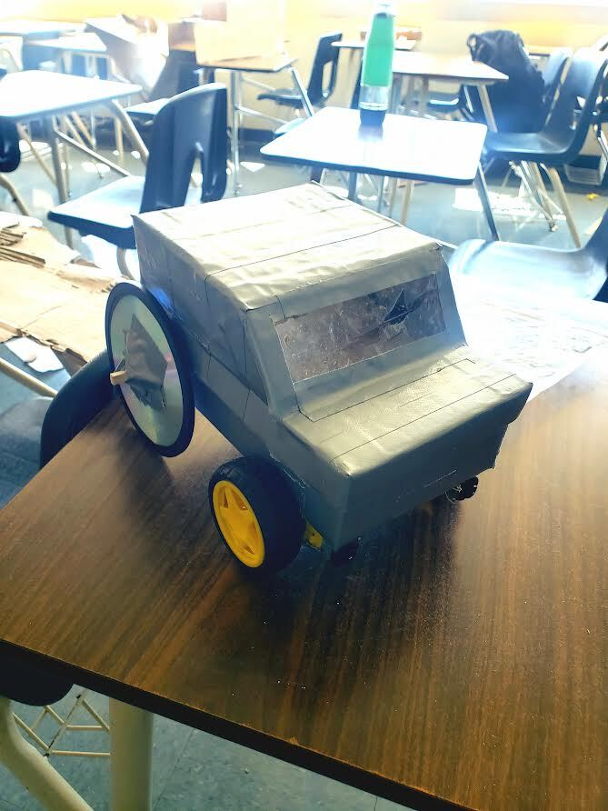
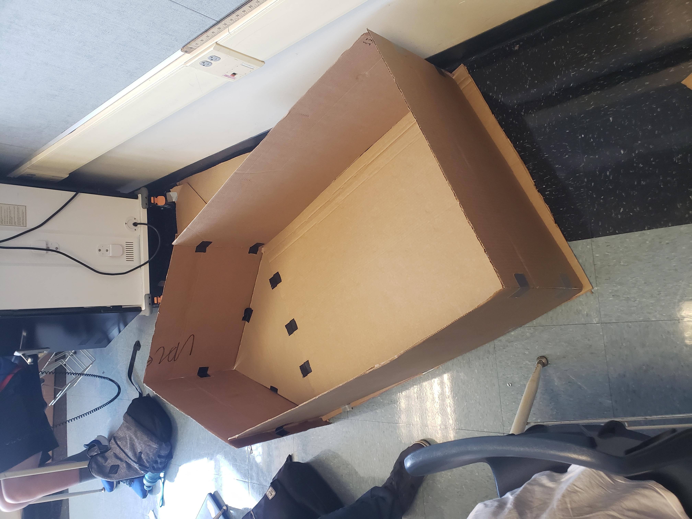

9/16/2022 this week we started to make out projects and I got to have to use a knife it was alot of fun and I made a UNSINKABLE BOAT today and I won the five minute contest.

9/23/2022 we finished our porject and worked perfectly after two ajustments and school was really good this week.

9/30/2022 We took apart a computer and labeled the parts. I did most of the worked. I did it flawlessly without any instructions.
10/7/2022 this week we made prosthetic legs for animals and we did a peanut butter activity and acted really dumb and had alot of fun this week was good.

10/13/2022 This week we did alot of testing, such as psat and I took a test in other classes as well so its all good and our quarter grades are coming out this week and im excited
10/21/22 this week we made botttle rockets and although ours wasnt to successfull it definitly went the straightest and definitly looked alot cooler than everyone elses.
10/27/22 this week just passed nothing important happened the week was just another week and to be honest it seems like something big will happen soon and yeah this week was just a week. Except for the part where we made filtration systems.
11/4/2022 this week was interesting alot happened in my personal life but nothing but this week just passes just like the last one and nothing has changed much in my life.
12/2/2022 Its been a really long time since I have done this and I am happy with engineering class and it is my favorite class but this week we started our new project of a spaghetti noodle bridge.
3/8/23 for the first part of my project I built the car body and we had to revise it about 3 or 4 time and we had alot of trouble finding a good way to make wheels and to make everything level and everything smooth. That was the first two weeks. then we had to find out how we were going to wire and put everything inside the car and keep it stable and supported. I did the manual labor basically while bryson and nathan did all the cool techy stuff I had alot of fun though saudering was my favorite part of it all and we did pretty good when we tested it and im proud of myself and everyone in my group.
4/10/23 we started our cardboard boat project and to be honest it is very iffy and not even close to the final project because I have to try and make it floatable with only 45 yards of tape or a full roll of tape which I dont think will be enough by we shall see.
4/28/23 school has been very stressfull with all the testing and more and on top of that school is coming to a close and I dont know how to feel because I have been very sad and dont know why but I will soon because everything gets resolved at some point.